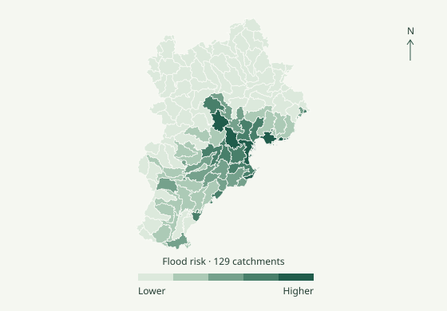
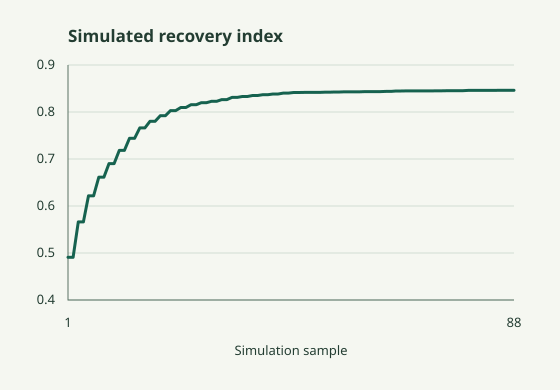

Urban and Regional Resilience
I assess regional resilience and flood risk to identify priorities for coordinated recovery.
Related paper ↗唐缝梁
Department of Urban and Rural Planning · School of Architecture, Tianjin University
I study resilience in cities and urban agglomerations as complex systems, with a focus on system resilience assessment, mobility equity, and flood resilience. I combine geospatial data, network analysis, and interpretable machine learning to investigate where risks and access to services differ. My recent work uses Beijing–Tianjin–Hebei to examine regional flood risk and coordinated recovery.

I assess regional resilience and flood risk to identify priorities for coordinated recovery.
Related paper ↗I examine how streets and transport networks shape access to shared mobility.
Related paper ↗I use street imagery, remote sensing, and interpretable machine learning to inform street assessment and planning decisions.
Related paper ↗25 papers · 6 first-author · 4 corresponding-author
Papers include journal articles and conference papers. ★ First author. ✉ Corresponding or co-corresponding author.

The dashboard brings together regional resilience assessment, flood-risk diagnosis, and coordinated recovery. The preview shows a simulated recovery index from the published dashboard data.
Open the interactive dashboard ↗Contributor to a National Key R&D Program project on coordinated recovery in urban systems and a Tianjin research project on metro station-area regeneration.
Journal reviewing includes Sustainable Cities and Society, Habitat International, Building and Environment and Journal of Transport Geography.
GIS, Python, spatial network analysis, and interpretable machine learning.